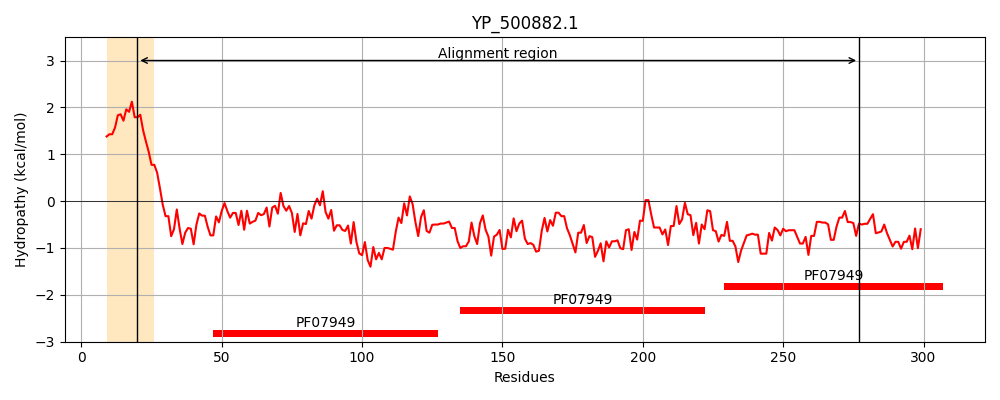
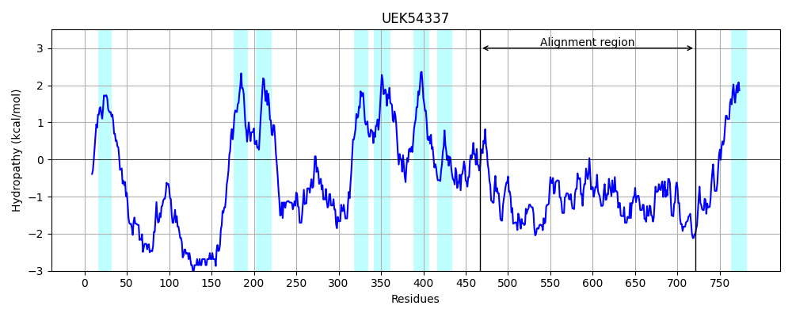
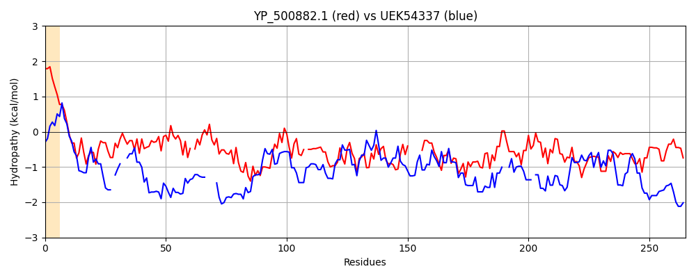

Hit Accession: UEK54337
Hit TCID: 2.A.1.91.2
Hit Description: gnl|BL_ORD_ID|20440 gnl|TC-DB|UEK54337.1|2.A.1.91.2 MFS domain-containing protein P115 [Plasmodium yoelii]
Mach Len: 265
e:0.000095
Query TMS Count : 1
Hit TMS Count: 8
TMS-Overlap Score: 0.000000
Predicted Substrates:None
BLAST Alignment:
Score: 101 , Bit scores: 43 bits, E-value: 9.5e-05, Alignment length: 265, Percentage identity: 22
Query: 20 FLSVNNVFGNIFNTGNLGQKSSKTIQDVPVEILYNTKDLHLTKAPETVNVTISGPQSKIIK-IENPEDLRVVIDLSNAKAGKYQEKYQVKGLADDIHYSVKPKLANIT-LENKVTKKMTVQPDVSQSDIDPLYKITKQEVSPQTVKVTGGE-----EQLNDIAYLKATFKTNKKINGDTKDVAEVTAFDKKLNKLNVSIQPNEVNLQVKVEPFSKKVKVNVKQKGSLADDKELSSIDLEDKEIEIFGSRDDLQNISEVDAEVDLD 277
F + N+ +IF L K+ + ++ +EI K+ +T T N + I K +ENP + N K K + I+ + ++ N+T +E + T K+ + S +++ P + K +S + G E LNDI + +K + + K+ + +K N LNV+++ N +N S N+K K + +D+ +I++ + EIE ++ + N +E D +D D
Sbjct: 467 FSAYINIEKSIFYDFFLKNKNKENKLNI-IEI--KDKNFKITTTYNTKNAQYNENDKSIFKDVENPN----ITPSYNRKKKHSHTIKPYKIHIETINKDLFEEMENLTNIEKEETDKIVINKSNSSNNVIPDIEDNKIPISSINNSINKGNGYSNCENLNDIHLFNDSSIKDKIEDVENKNSLNKNSLNK--NSLNVNVETN-LNTNDNSNKSSNDFITNIKSKQPIIEDEFEKTINITEGEIEEKKNKFLVPNHNEDDKYIDYD 721 | Protein Hydropathy Plots: |
|---|
|  |  |
Pairwise Alignment-Hydropathy Plot:
|
|---|
|  |